🏠
日
月
縦書き／横書き

| 【対訳】ピーターラビット ⑩ りすのナトキンのおはなし ―THE TALE OF SQUIRREL NUTKIN― | |
| ビアトリクス・ポター | |
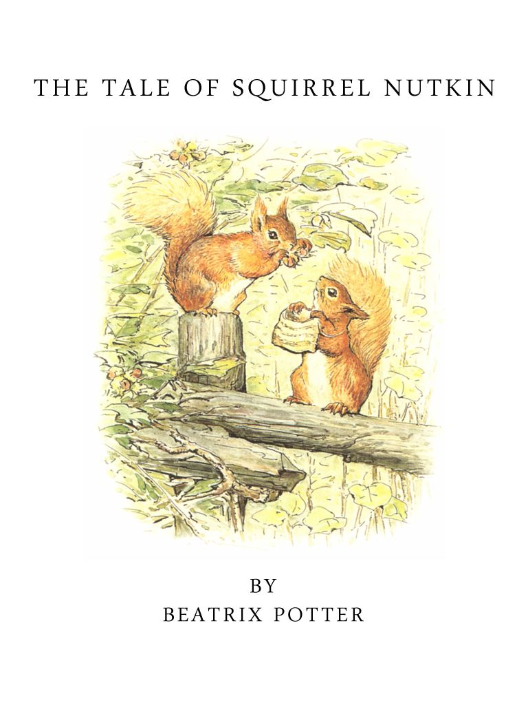
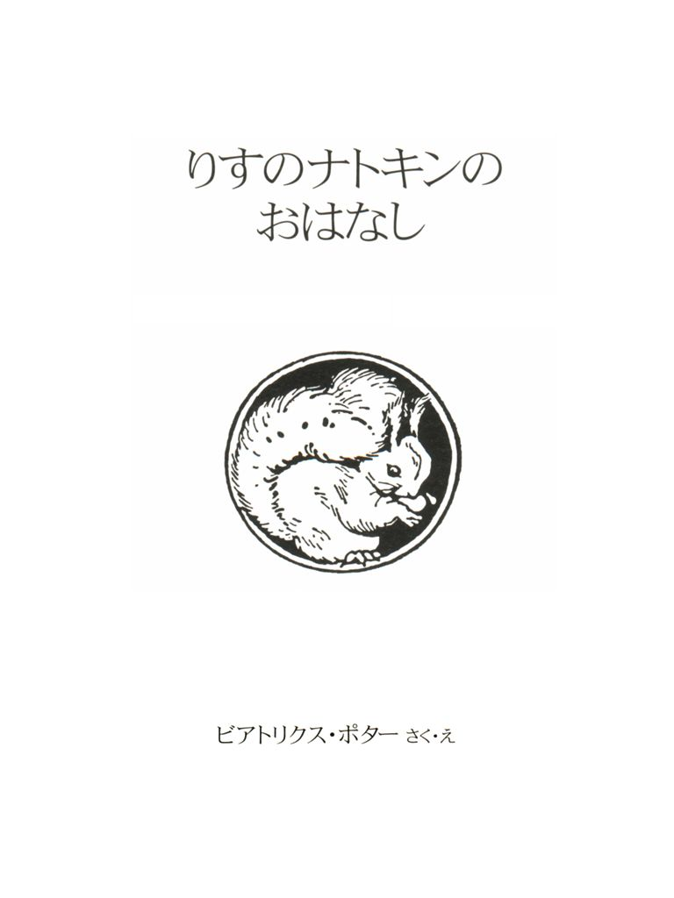
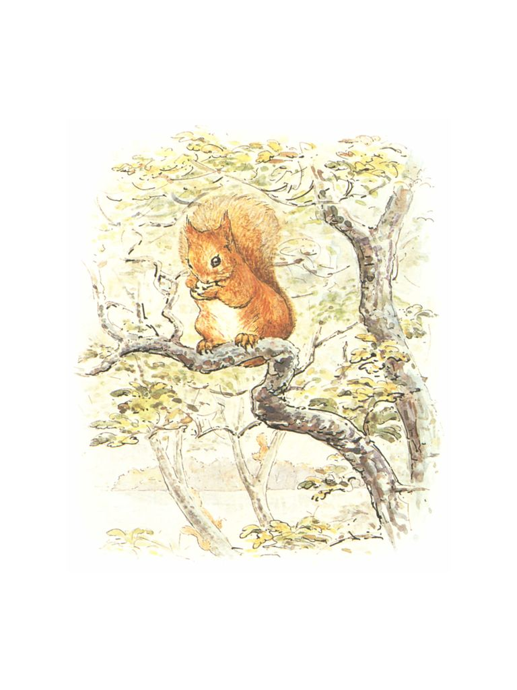
このおはなしは、しっぽのおはなしです。そのしっぽは、小さなあかりすのしっぽのことで、あかりすの名前は〝ナトキン〟といいます。
彼には、トゥインクルベリーと呼ばれている兄弟やたくさんのいとこがいました。そして彼らは、湖の畔にある森に住んでいました。
This is a Tale about a tail---a tail that belonged to a little red squirrel, and his name was Nutkin.
He had a brother called Twinkleberry, and a great many cousins: they lived in a wood at the edge of a lake.
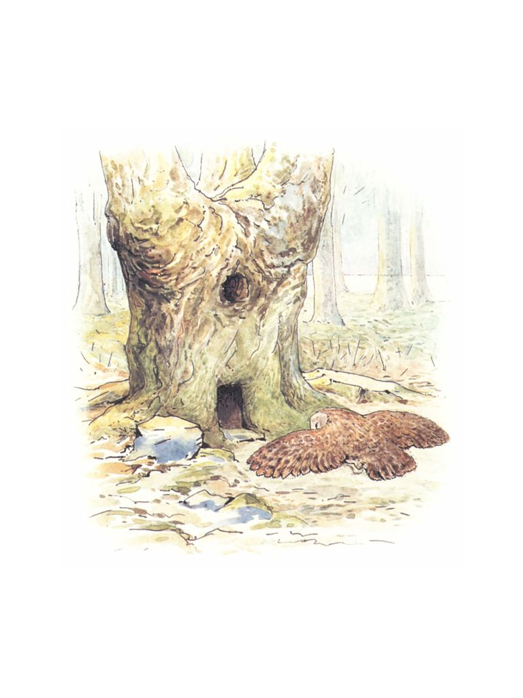
湖の真ん中には、どんぐりの木などが生い茂っている島がありました。その木の中には、くぼんだ楢の木が立っていました。それは〝ブラウンおじいさん〟という名前のふくろうの家でした。
In the middle of the lake there is an island covered with trees and nut bushes; and amongst those trees stands a hollow oak-tree, which is the house of an owl who is called Old Brown.
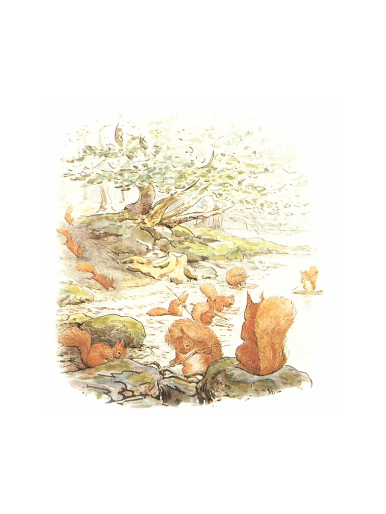
木の実が熟し、ハシバミの木が金色と緑色に染まったある秋、ナトキンやトゥインクルベリー、ほかの小さなりすたちは、森から湖のほとりまで出てきました。
One autumn when the nuts were ripe, and the leaves on the hazel bushes were golden and green---Nutkin and Twinkleberry and all the other little squirrels came out of the wood, and down to the edge of the lake.
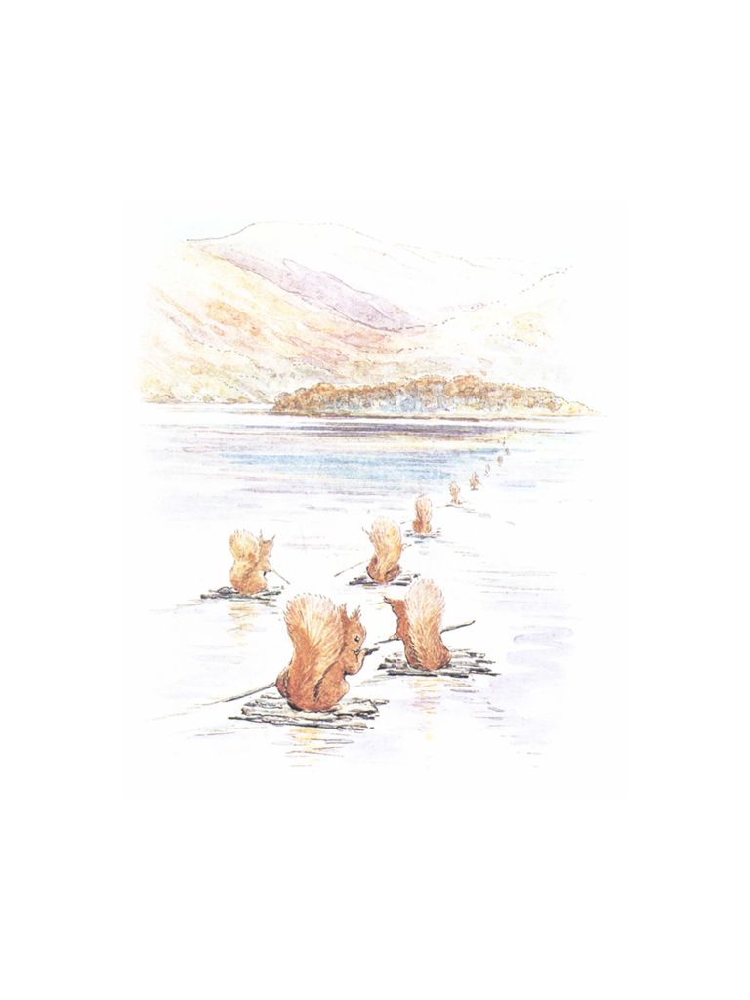
りすたちは小枝で小さないかだを作りました。それらは、木の実を集めるために、ふくろう島へと漕ぎました。
りすたちは、それぞれ小さな袋と、大きなオールを持って、帆の代わりにしっぽを広げました。
They made little rafts out of twigs, and they paddled away over the water to Owl Island to gather nuts.
Each squirrel had a little sack and a large oar, and spread out his tail for a sail.
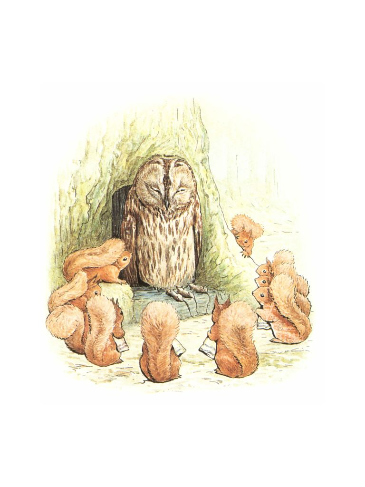
さらに、りすたちは、ブラウンおじいさんへのプレゼントとして3
匹の太ったはつかねずみを持っていき、彼の玄関の石の上に置きました。
その後、トゥインクルベリーと他の小さなりすたちは、頭を低く下げて、丁寧に言いました――
「ブラウンおじいさん、僕たちが、あなたの島の木の実を集めることを許可してもらえませんか？」
They also took with them an offering of three fat mice as a present for Old Brown, and put them down upon his door-step.
Then Twinkleberry and the other little squirrels each made a low bow, and said politely---
"Old Mr. Brown, will you favour us with permission to gather nuts upon your island?"
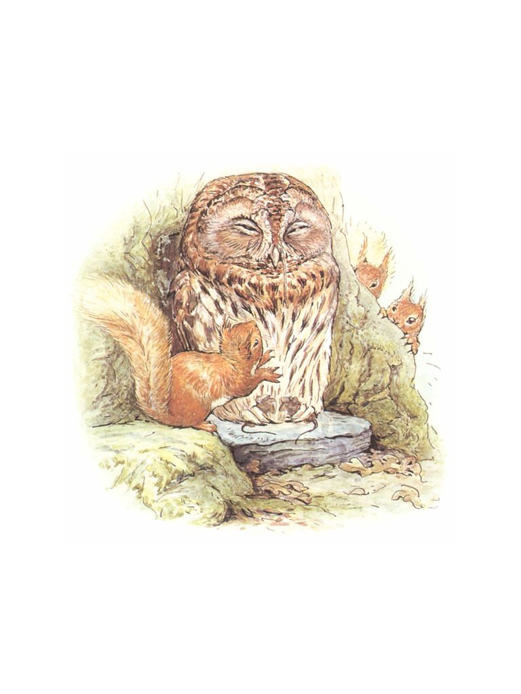
しかし、ナトキンは、とても生意気で、彼は、小さな赤いさくらんぼのように上下に揺れながら歌い出しました――
「なぞなぞ とけるかな！
赤い赤いコートを着ている 小さな男！
手にした杖とのどの中の石
このなぞなぞが解けたなら、あなたに４ペンス銀貨をあげましょう」
そのなぞなぞはこの丘と同じくらい古いものでした。それでもブラウンおじいさんはナトキンには目もくれませんでした。
ブラウンおじいさんは、目を強く閉じて、眠りについてしまいした。
But Nutkin was excessively impertinent in his manners. He bobbed up and down like a little red cherry, singing---
"Riddle me, riddle me, rot-tot-tote!
A little wee man, in a red red coat!
A staff in his hand, and a stone in his throat;
If you'll tell me this riddle, I'll give you a groat."
Now this riddle is as old as the hills; Mr. Brown paid no attention whatever to Nutkin.
He shut his eyes obstinately and went to sleep.
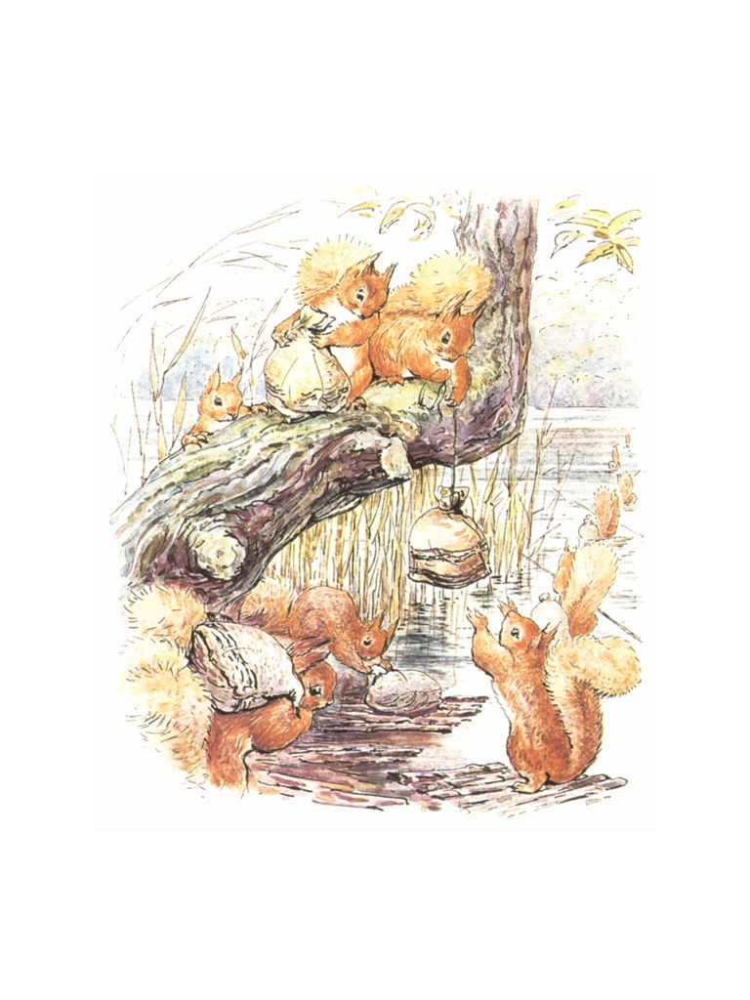
小さなりすたちは小さい袋を木の実でいっぱいにして、夕方になると家へと航海しました。
The squirrels filled their little sacks with nuts, and sailed away home in the evening.
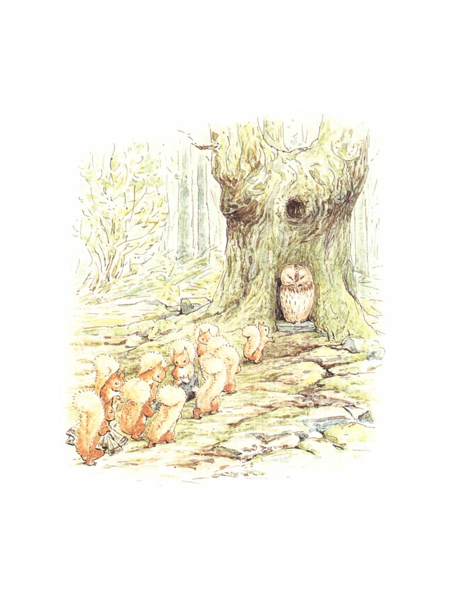
そして、次の朝、小さなりすたちは、またふくろう島に戻って来ました。そして、トゥインクルベリーと他のりすたちは、ずんぐり太ったもぐらを、ブラウンおじいさんの家の前の石に置いて言いました――
「ブラウンおじいさん、僕たちここでもう少し木の実を集めてもいいですか？」
But next morning they all came back again to Owl Island; and Twinkleberry and the others brought a fine fat mole, and laid it on the stone in front of Old Brown's doorway, and said---
"Mr. Brown, will you favour us with your gracious permission to gather some more nuts?"
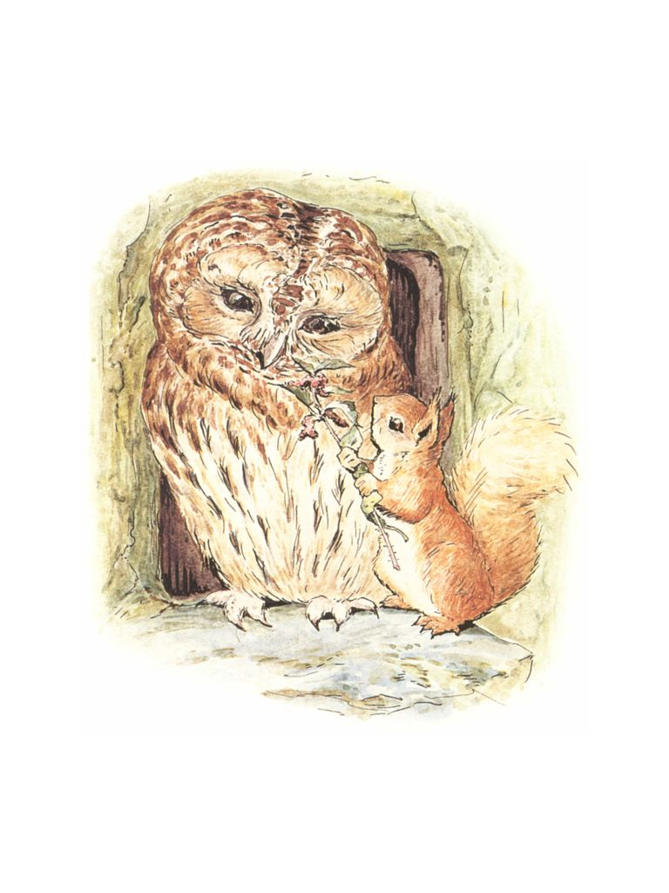
しかし、誰のことも気にしないナトキンは、上下に飛びはねはじめて、イラクサでブラウンおじいさんをくすぐりながら歌いました――
「ブラウンおじいさん！ なぞなぞ解けるかな！
壁の中にも ヒッティ ピッティ
壁がなくても ヒッティ ピッティ
もし、ヒッティ ピッティを触ろうとしたら
ヒッティ ピッティは噛みつくぞ！」
ブラウンおじいさんは、突然起きると、もぐらを家に運び込んでしまいました。
But Nutkin, who had no respect, began to dance up and down, tickling old Mr. Brown with a nettle and singing---
"Old Mr. B! Riddle-me-ree!
Hitty Pitty within the wall,
Hitty Pitty without the wall;
If you touch Hitty Pitty,
Hitty Pitty will bite you!"
Mr. Brown woke up suddenly and carried the mole into his house.
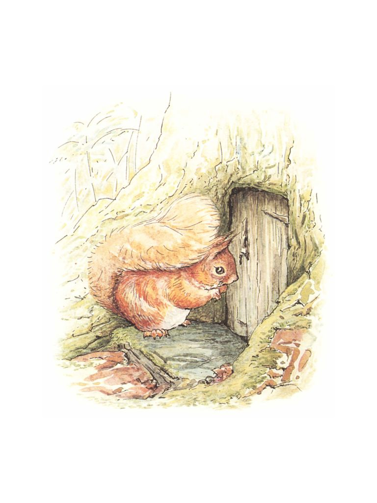
ブラウンおじいさんは、ドアをナトキンの目の前で閉めました。まもなく、楢の木のてっぺんから、薪を燃やす細く青い煙が立ち上りはじめました。そして、ナトキンは鍵穴からからのぞき込んで歌いました。
「お家の中はいっぱい！ 穴の中もいっぱい！
それなのに、お茶碗には半分も入っていない！」
He shut the door in Nutkin's face. Presently a little thread of blue smoke from a wood fire came up from the top of the tree, and Nutkin peeped through the key-hole and sang---
"A house full, a hole full!
And you cannot gather a bowl-full!"
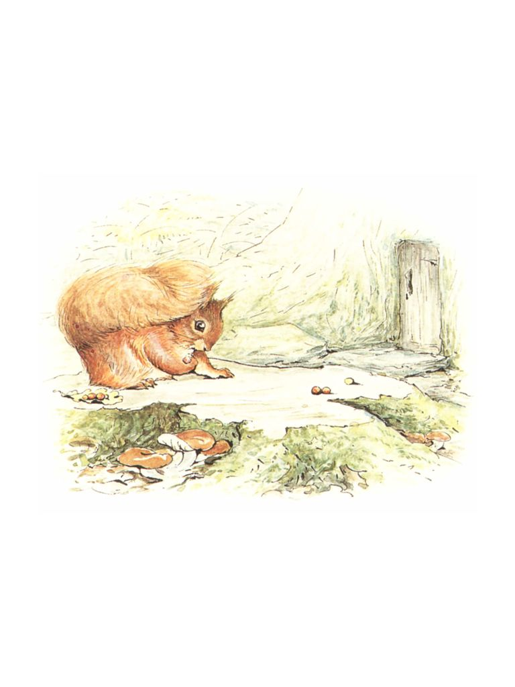
小さなりすたちは、島中で木の実を探して、小さい袋を満杯にしました。
しかし、ナトキンは黄色や真っ赤な楢の実を集めて、楢の切り株に座りながらビー玉遊びをしながら、ブラウンおじいさんのドアを見張っていました。
The squirrels searched for nuts all over the island and filled their little sacks.
But Nutkin gathered oak-apples---yellow and scarlet---and sat upon a beech-stump playing marbles, and watching the door of old Mr. Brown.
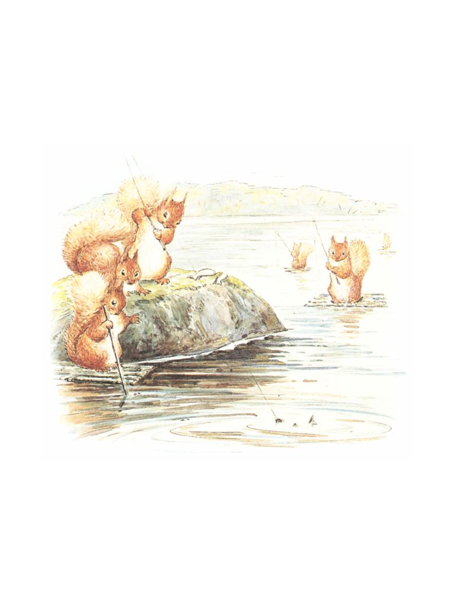
３日目、りすたちはとても早起きをして、魚を釣りに行きました。りすたちはブラウンおじいさんへのプレゼントとして７ひきの太ったヒメハヤを捕まえました。
りすたちは、湖の上をパドルで漕いで、曲がりくねった栗の木の下からふくろう島に登りました。
On the third day the squirrels got up very early and went fishing; they caught seven fat minnows as a present for Old Brown.
They paddled over the lake and landed under a crooked chestnut tree on Owl Island.
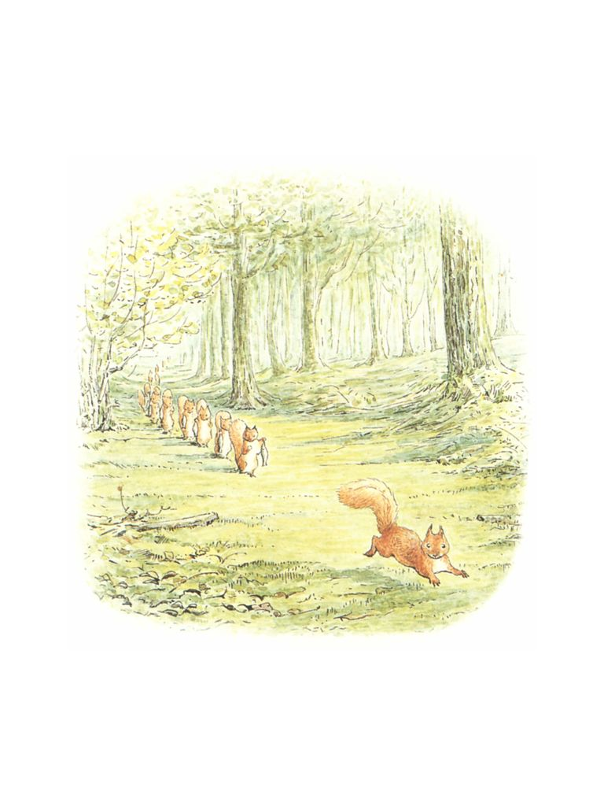
トゥインクルベリーと６匹の小さなりすたちは、太った魚をそれぞれ運びました。しかし、礼儀知らずのナトキンは、プレゼントを持ってきませんでした。ナトキンは走り出しながら、歌いはじめました――
「荒野の男が、僕に言いました、
『どれくらいのイチゴが、海で育ちますか？』
名案を考えたので、僕は彼に答えました。
『森で育つニシンと同じくらい』」
しかし、ブラウンおじいさんはなぞなぞに興味を持っているようには見せません――答えがしっかりと出ていたのにもかかわらずです。
Twinkleberry and six other little squirrels each carried a fat minnow; but Nutkin, who had no nice manners, brought no present at all. He ran in front, singing---
"The man in the wilderness said to me,
'How many strawberries grow in the sea?'
I answered him as I thought good---
'As many red herrings as grow in the wood.'"
But old Mr. Brown took no interest in riddles---not even when the answer was provided for him.
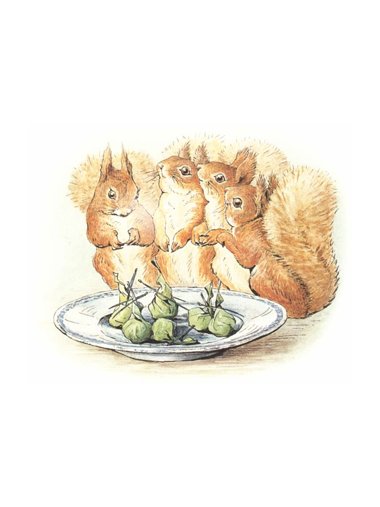
４日目に、りすたちは６匹の太ったカブトムシのプレゼントを持ってきました。そして、それはブラウンおじいさんにとって、私たちのプラムプディングと同じくらいのおやつです。それぞれのカブトムシは、葉っぱに包まれて、松葉ピンで結びつけられていました。
しかし、ナトキンは、いつもどおり乱暴に歌いました――
「ブラウンおじいさん！ なぞなぞ解けるかな
イギりすの小麦粉、スペインの果実、
土砂降りの中で出会った。
袋に入れられ、ぐるりと紐で結ばれた、
このなぞなぞ解ければ、あなたに指輪をあげる」
ナトキンがこんなことを歌うなんておかしいのです。だって、ブラウンおじいさんにあげるような指輪なんて持っていないのですから。
On the fourth day the squirrels brought a present of six fat beetles, which were as good as plums in plum-pudding for Old Brown. Each beetle was wrapped up carefully in a dock-leaf, fastened with a pine-needle pin.
But Nutkin sang as rudely as ever---
"Old Mr. B! riddle-me-ree
Flour of England, fruit of Spain,
Met together in a shower of rain;
Put in a bag tied round with a string,
If you'll tell me this riddle, I'll give you a ring!"
Which was ridiculous of Nutkin, because he had not got any ring to give to Old Brown.
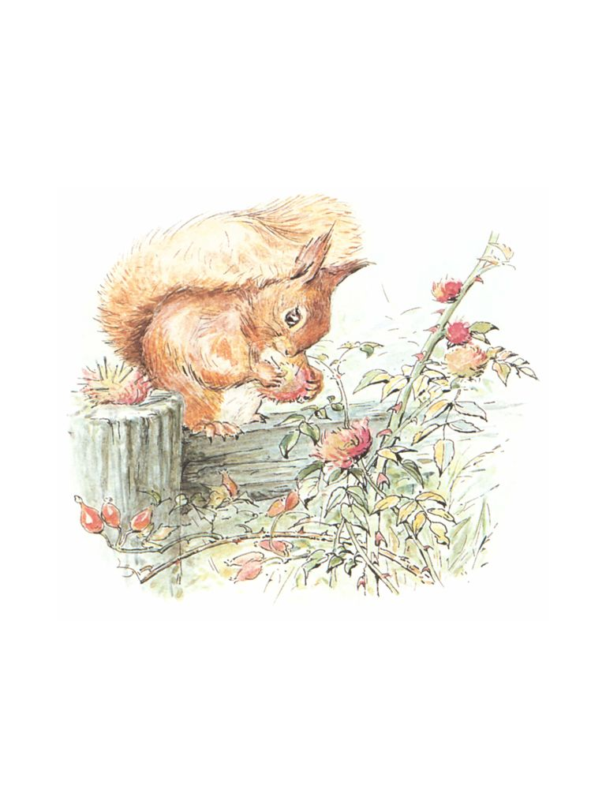
他のりすたちは、林の中を上に下に木の実を探していました。しかし、ナトキンは、イバラの木から虫こぶを集めて、松葉ピンをいっぱい突き刺して遊んでいました。
The other squirrels hunted up and down the nut bushes; but Nutkin gathered robin's pincushions off a briar bush, and stuck them full of pine-needle pins.
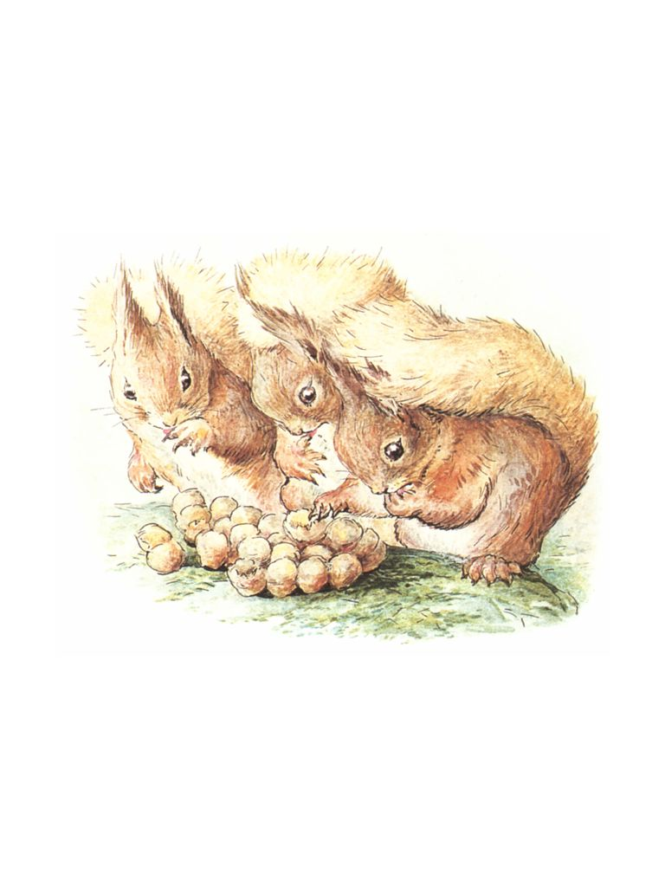
５日目、りすたちははちみつをプレゼントに持ってきました。はちみつを石の上に置いた後、指をなめてみると、それは甘くて、べとべとしていました。りすたちは、丘のてっぺんにあるミツバチの巣から、はちみつを盗んできたのです。
しかし、ナトキンは上下にスキップしながら、歌いました――
「ブウンブン！ ブブ！ ブブ！ ブウンブン！
チップルチンのあたりを行けば
ブウブウぶたの群れに出会う
黄色の首に、黄色いお尻！
やつらはチップルチンのあたりでは
いちばんブウブウ鳴くぶたよ」
On the fifth day the squirrels brought a present of wild honey; it was so sweet and sticky that they licked their fingers as they put it down upon the stone. They had stolen it out of a bumble bees' nest on the tippitty top of the hill.
But Nutkin skipped up and down, singing---
"Hum-a-bum! buzz! buzz! Hum-a-bum buzz!
As I went over Tipple-tine
I met a flock of bonny swine;
Some yellow-necked, some yellow backed!
They were the very bonniest swine
That e'er went over Tipple-tine."
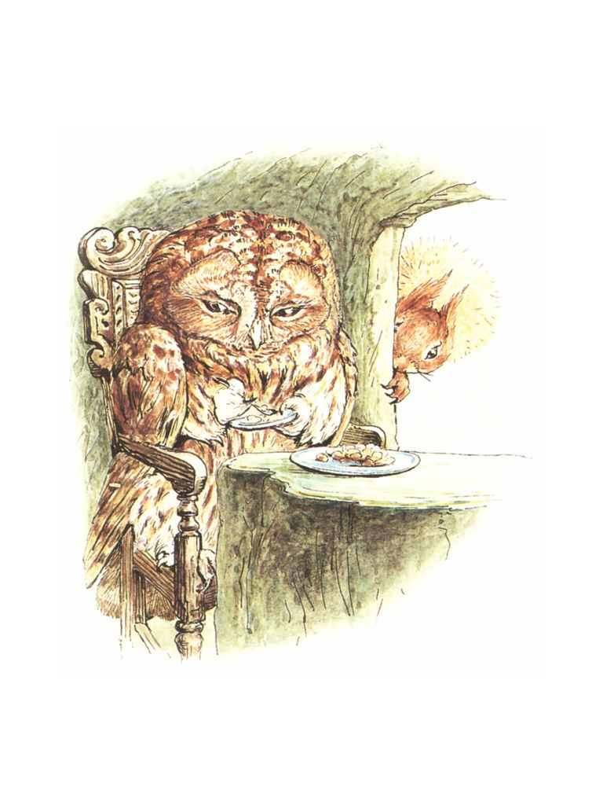
ブラウンおじいさんは、ナトキンの生意気な様子に、うんざりして目を背けてしまいました。
しかし、彼ははちみつは食べてしまいました！
Old Mr. Brown turned up his eyes in disgust at the impertinence of Nutkin.
But he ate up the honey!
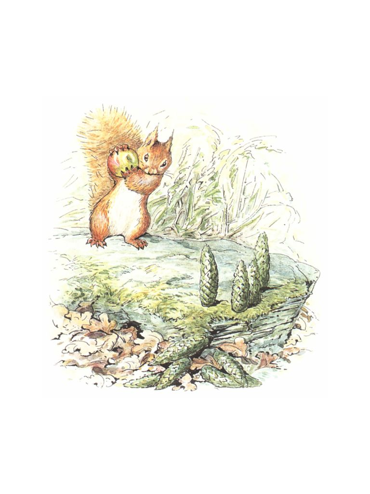
りすたちは、小さい袋を木の実で満杯にしました。
けれども、ナトキンは、大きくて平らな岩で、山リンゴとモミのマツカサでボーリングをして遊んでいました。
The squirrels filled their little sacks with nuts.
But Nutkin sat upon a big flat rock, and played ninepins with a crab apple and green fir-cones.
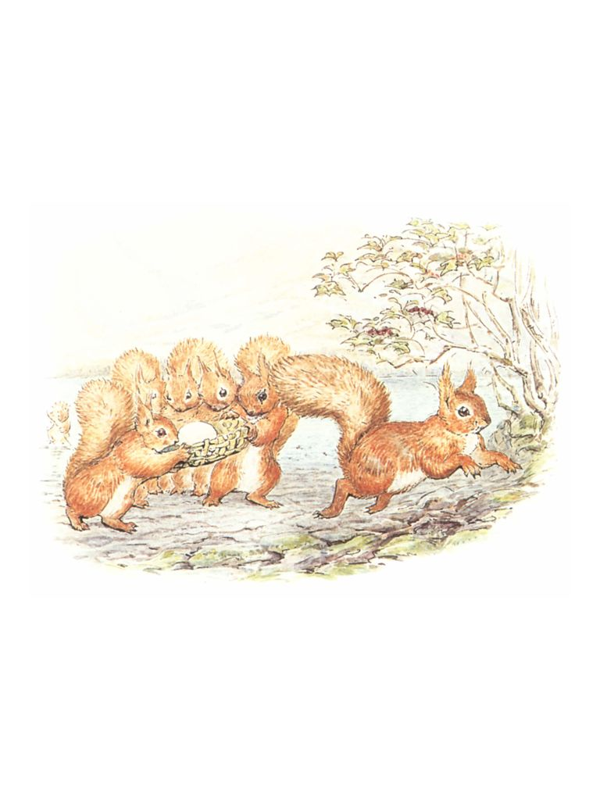
６日目は土曜日で、りすたちが島へ来るのもこれが最後です。草で編んだ小さなカゴに入れて産みたてタマゴを、ブラウンおじいさんへのお別れとばかりに持っていきました。
それなのに、ナトキンはみんなの前に立って 駆けまわったり、叫んだりしました――
「ハンプティダンプティが床の中
白いふとんが彼の首までまんまるだ
医者が40
人でも 大工が40
人でも
それでも治せないハンプティダンプティ！」
On the sixth day, which was Saturday, the squirrels came again for the last time; they brought a new-laid egg in a little rush basket as a last parting present for Old Brown.
But Nutkin ran in front laughing, and shouting---
"Humpty Dumpty lies in the beck,
With a white counterpane round his neck,
Forty doctors and forty wrights,
Cannot put Humpty Dumpty to rights!"
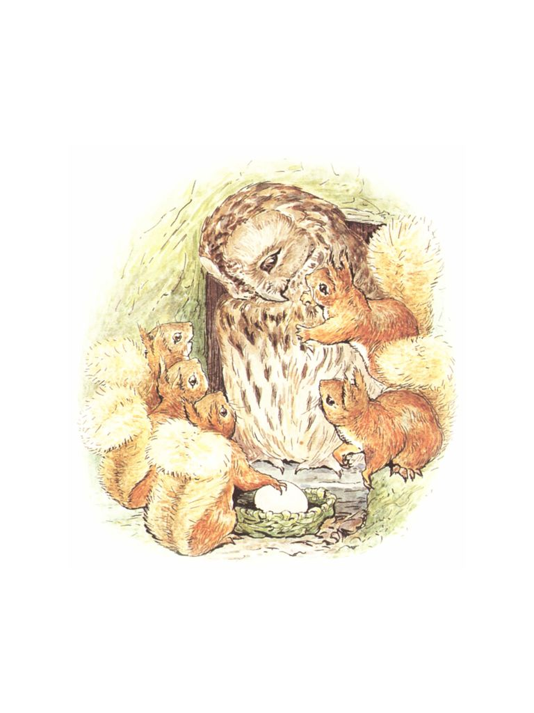
それはさておき、ブラウンおじいさんは、タマゴが気に入った様子です。片目を開けて、また閉じました。それでも、やっぱり何もしゃべりません。
Now old Mr. Brown took an interest in eggs; he opened one eye and shut it again. But still he did not speak.
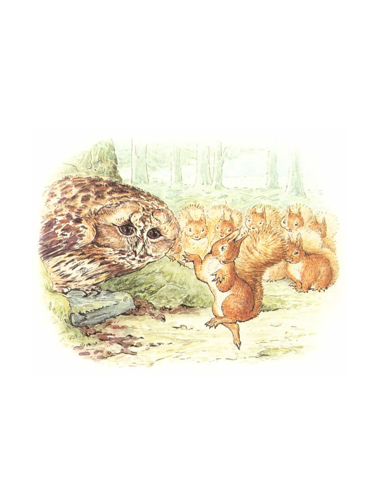
ナトキンは、ますます生意気にになって――
「ブラウンじいさん！ ブラウンじいさん！
王さまの台所のドア
家来と馬が総出でも
王さまの台所のドアからは
動かすことができません」
太陽の光のように、ナトキンが跳びはねて踊りました。それでもブラウンおじいさんは、まったく何も言いませんでした。
Nutkin became more and more impertinent---
"Old Mr. B! Old Mr. B!
Hickamore, Hackamore, on the King's kitchen door;
All the King's horses, and all the King's men,
Couldn't drive Hickamore, Hackamore,
Off the King's kitchen door."
Nutkin danced up and down like a sunbeam; but still Old Brown said nothing at all.
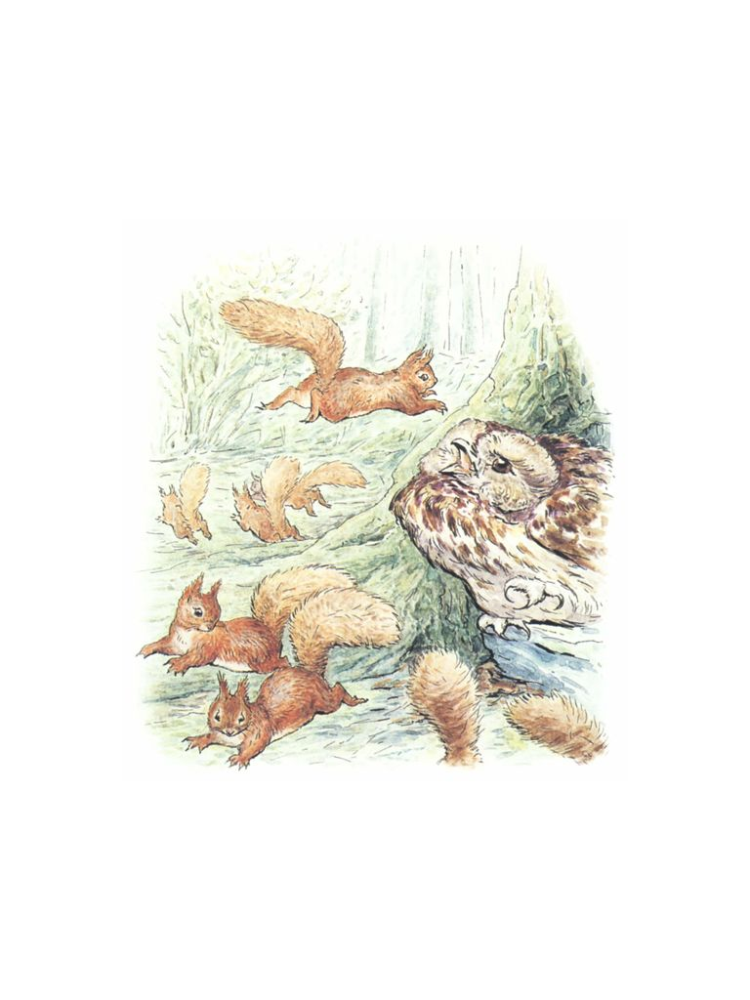
ナトキンは、またはじめました――
「アーサーが山からやって来た。
うなりを上げてやって来た。
スコットランドの王さまでも
アーサーを止めることなどできません」
ナトキンは、まるで風のよう音を立てて騒いでいました、そして、彼はブラウンおじいさんの頭をめがけて走りだしてジャンプをしました！
そして突然、大きな「キーキー！」という大きな叫び声が聞こえました。
他のりすたちは、慌てふためいて繁みに隠れてしまいました。
Nutkin began again---
"Arthur O'Bower has broken his band,
He comes roaring up the land!
The King of Scots with all his power,
Cannot turn Arthur of the Bower!"
Nutkin made a whirring noise to sound like the wind, and he took a running jump right onto the head of Old Brown!...
Then all at once there was a flutterment and a scufflement and a loud "Squeak!"
The other squirrels scuttered away into the bushes.
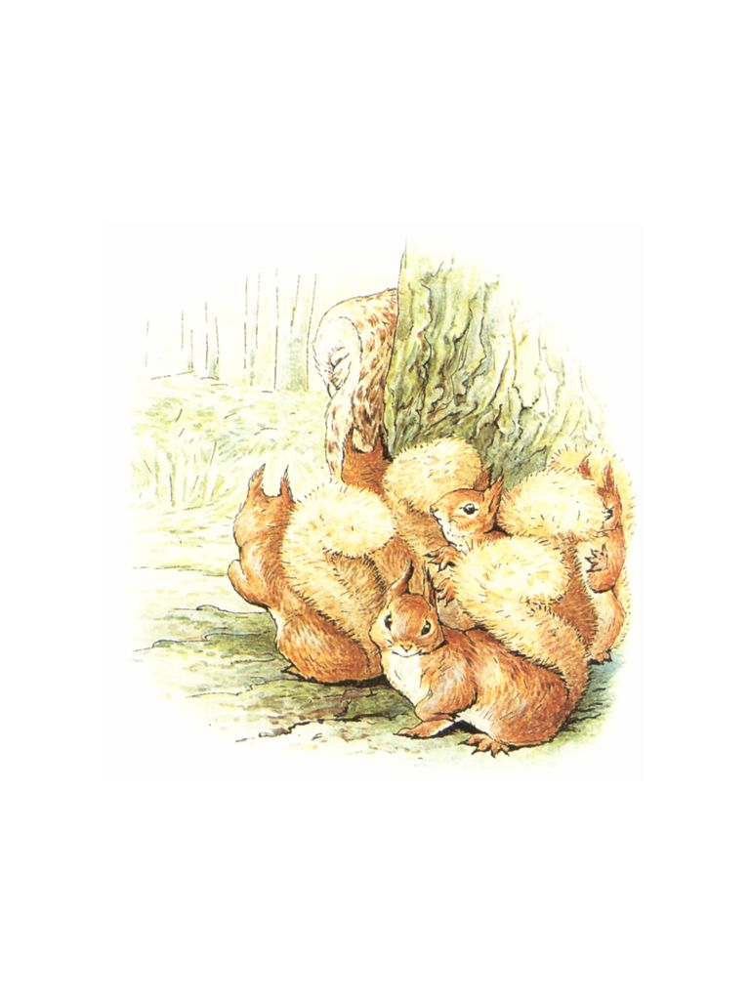
りすたちがこわごわ戻ってきて、木の陰から様子をうかがってみると、ブラウンおじいさんは、玄関の前にすわったまま、ビクともしないで目を閉じて、まるで何もなかったかのようでした。
＊ ＊ ＊ ＊ ＊
ところが、ナトキンはブラウンおじいさんのお腹のスキマに入れられていたのです。
When they came back very cautiously, peeping round the tree---there was Old Brown sitting on his door-step, quite still, with his eyes closed, as if nothing had happened.
＊ ＊ ＊ ＊ ＊
But Nutkin was in his waistcoat pocket!
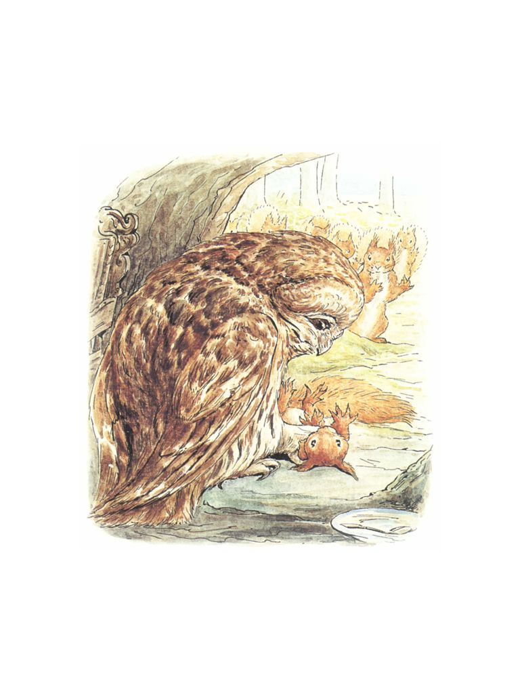
これで、おはなしは終わりのように見えます。でも、そうではありません。
This looks like the end of the story; but it isn't.
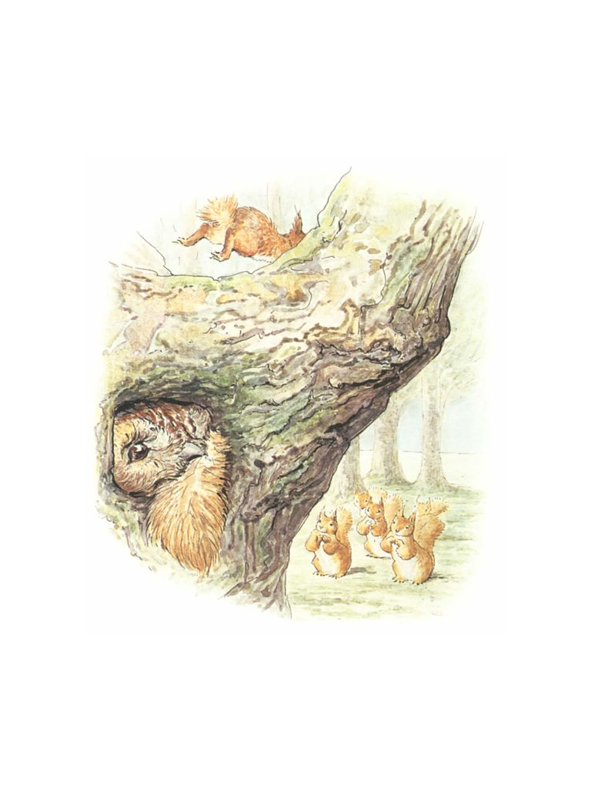
ブラウンおじいさんは、ナトキンを家に連れていきました。そして、しっぽを持って、ナトキンの皮を剥ごうとしました。
その時、ナトキンもちからいっぱい暴れると、しっぽが切れてしまったのです。そのまま、階段を駆け上がって、屋根裏の窓から逃げました。
Old Brown carried Nutkin into his house, and held him up by the tail, intending to skin him; but Nutkin pulled so very hard that his tail broke in two, and he dashed up the staircase and escaped out of the attic window.
そして、今では、もし誰かが、森の中でナトキンに会ったとき、彼になぞなぞを出してみると、ナトキンはその人に棒を投げつけて、足をバタバタさせて叫ぶことでしょう。
「悔しい！ 悔しーい！ 悔しい！ 悔しーーい！」
おしまい
And to this day, if you meet Nutkin up a tree and ask him a riddle, he will throw sticks at you, and stamp his feet and scold, and shout---
"Cuck-cuck-cuck-cur-r-r-cuck-k-k!"
THE END
【対訳】ピーターラビット⑩
りすのナトキンのおはなし
―THE TALE OF SQUIRREL NUTKIN―
発行日 ２０１４年３月14
日
著 者 ビアトリクス・ポター
発行者 赤井 仁
発行所 ゴマブックス株式会社
〒１０７－００５２
東京都港区赤坂８－５－40
ペガサス青山７１０
(c) GOMA－BOOKS Co.,ltd. 2014